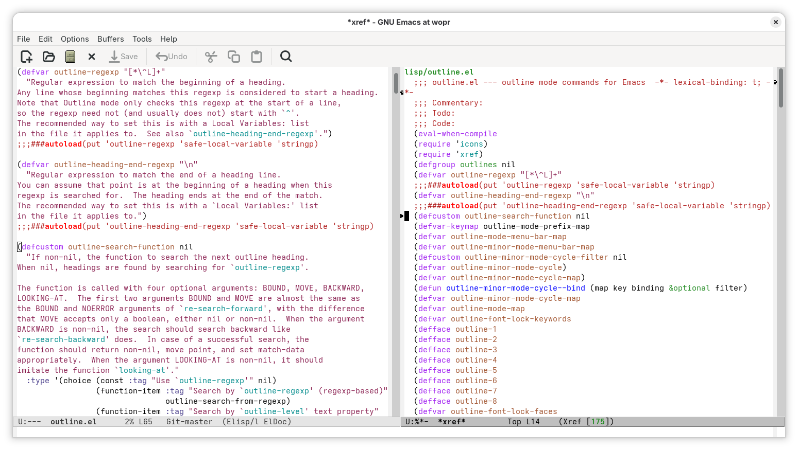

Outline-xref
Outline-xref—initially named Outline-occur—is a GNU Emacs feature that allows you to navigate the current buffer's outline using Xref. As the name suggests, Outline-xref uses two pieces of the built-in GNU Emacs infrastructure to provide this functionality—Outline and Xref.
Outline is specialized in editing outlines, which are defined by "headings". For instance, headlines in an Org document, function and variable declarations in source code, etc. Outline integrates with several major modes that customize what are headings and how they can be found in a buffer.
Xref provides generic infrastructure for cross-referencing commands. It can be used to present a variety of results like search matches, references to identifiers, etc.
The idea behind Outline-xref is to leverage Outline to identify the headings in a given buffer and use Xref to display them. That provides a nice quick overview of the working document and makes it easy to jump around the relevant sections.
Usage
There is a single entry point, which is the outline-xref command.
I bind it to M-s M-o for easy access from any buffer:
(keymap-set search-map "M-o" #'outline-xref)
When you execute this command, it will display an Xref buffer with the outline of the current buffer. The following screenshot shows it in action:

In general, it just works and you don't have to configure anything.
This is because major modes usually take care of setting the relevant
outline variables.
However, if you have specific needs, you can customize the
outline-search-function and outline-regexp variables.
Remember to read their corresponding doc strings for more information.
History
2026-07-15
Outline-xref starts as a tiny package named Outline-occur. It is still available in the following read-only source code repository:
2026-08-04
After announcing the Outline-occur package in the emacs-devel mailing list, we decided that it made sense to integrate it into GNU Emacs core.
If you would like to dig deeper, see the following commits:
- 8a88f3ed5aee "Add `outline-occur' command and `display-buffer-default-alist' variable"
- 9e6f03993b82 "* lisp/outline.el (outline-occur): Autoload."
2026-08-11
Outline-occur is reimplemented using Xref and renamed to Outline-xref. The reason is that Occur is designed around regular expressions, while Outline supports both regular expressions and custom search functions to find outline headings. In order to provide a navigable outline that matches the headings identified by Outline, both search strategies must be supported and Xref is better suited for this task.
If you are curious about the details, see the following commit:
- fcee0b4ff1d8 "Reimplement `outline-occur' using Xref and match Outline headings"